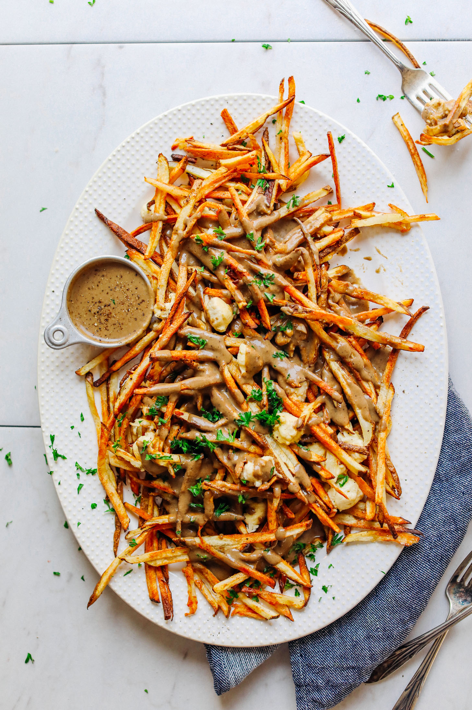

Easy Vegan Poutine

Origins of Poutine
Poutine is a dish of french fries, cheese curds, and gravy that is thought
to have originated in the 1950s in Québec, Canada. Its exact origin is
hotly debated, with various restaurants and regions claiming the
invention.
Ingredients
Fries
-
4 medium russet potatoes (unpeeled // or sub sweet potatoes for a
savory-sweet poutine!)
-
3-4 Tbsp avocado or melted coconut oil (if avoiding oil, see notes)
- 1/2 tsp sea salt
Gravy
- 3 Tbsp avocado or melted coconut oil (if avoiding oil, sub water)
- 2 medium shallots (minced)
- 1 1/2 cups diced button or cremini mushrooms
- 1/4 tsp each sea salt and black pepper (plus more to taste)
- 1 Tbsp balsamic vinegar
- 1 tsp 1 tsp coconut aminos (optional)
-
3 Tbsp cornstarch (or arrowroot // if not GF, sub all-purpose flour)
- 1/2 cup vegetable broth (DIY or store-bought)
- 1 cup unsweetened plain almond milk
- 1-2 tsp vegan worcestershire sauce or ketchup
- Vegan Mozzarella "Cheese"
Steps
-
FRIES: Preheat oven to 450 degrees F (232 C) and chop potatoes into thin
slices by halving lengthwise then cutting into wedges and then strips.
For “wedges,” cut into larger pieces – both work the same, but
matchsticks cook faster.
-
Line two large baking sheets with parchment paper (amount as original
recipe is written // use fewer or more pans if altering batch size). Add
fries, oil (see notes for substitution), and salt and toss to coat. Then
arrange fries in a single layer, making sure they aren’t overlapping too
much. This will help them crisp up and cook evenly.
-
Bake for a total of 25-35 minutes, tossing/flipping at least once to
ensure even baking. When the fries are finished, remove from oven and
set aside.
-
GRAVY: While fries are baking, prepare gravy by heating a rimmed skillet
over medium heat. Once hot, add oil (or water) and shallots. Sauté for
2-3 minutes, stirring occasionally. Then add mushrooms, salt, pepper,
balsamic vinegar, and coconut aminos (optional).
-
Stir and increase heat to medium high to brown the mushrooms. Cook for
4-5 minutes or until they are slightly caramelized. Then add the
cornstarch and stir to coat. It should look dry at this point – that’s
OK.
-
Lower heat to low and slowly add the broth and almond milk while
whisking. It should resemble gravy pretty quickly and should bubble and
thicken as it cooks.
-
Cook for 4-5 minutes, or until you’ve reached the desired consistency.
Add broth or almond milk to thin if it becomes too thick.
-
Transfer to a blender and blend until smooth (optional but recommended).
Taste and adjust flavor as needed, adding more salt and pepper to taste
or more Worcestershire or coconut aminos for more depth of flavor. See
notes for other additions if you desire more depth of flavor.
- Return gravy to stovetop and heat on lowest heat to keep warm.
-
FOR SERVING: Add all of the baked fries to one baking sheet. Then divide
the Vegan Mozzarella Cheese into 1 tsp “curds” and add to the baked
fries (I used just shy of 1 batch of the recipe). Then place fries back
in oven on the top rack on medium-to-low broil so the cheese can melt
and get slightly browned. Watch carefully so the fries don’t burn – 3-5
minutes.
-
Pour the gravy over top and dig in! This is a dish best enjoyed fresh!
However, the cheese will store separately in the fridge up to 10 days
(see notes for other uses). The gravy will keep in the refrigerator up
to 5 days (reheat on stovetop for best results – add more almond milk or
broth to thin if thickened), and the fries will store for 2-3 days
(reheat in oven at 350 degrees F (176 C) for best results).